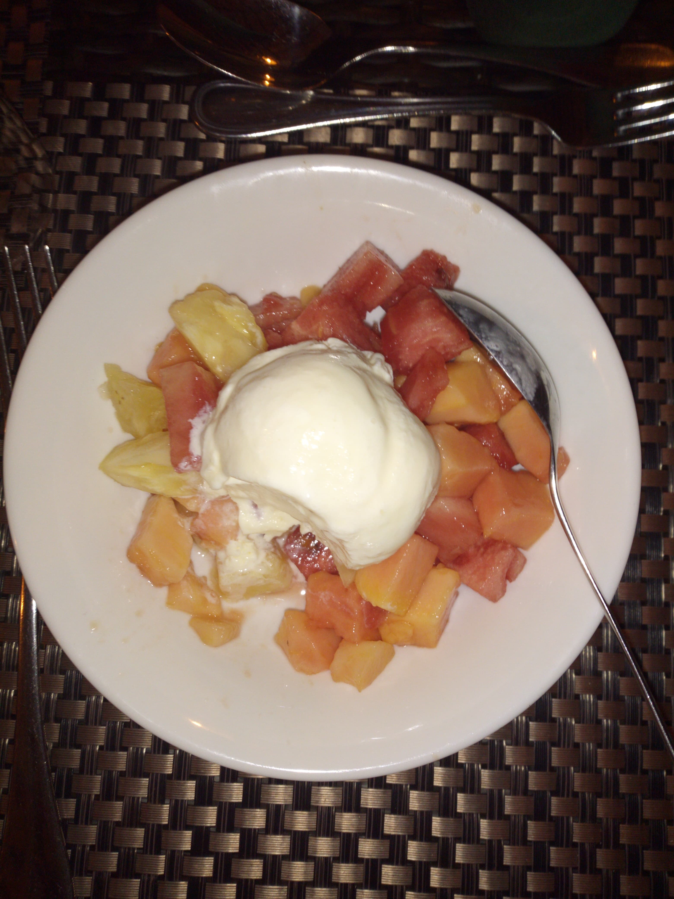
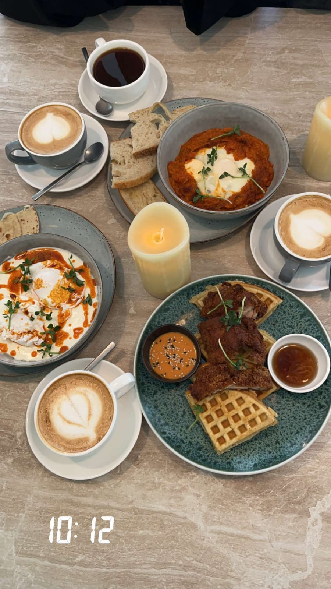
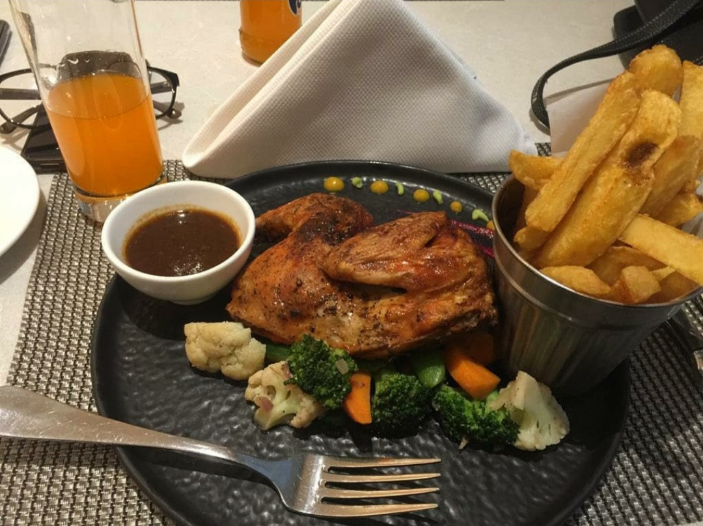

About Nairobi Eats
Looking for some delicious eats in Nairobi? Look no further! Nairobi Eats is your ultimate guide to the best restaurants in the city. From cozy cafes to fine dining experiences, we've got you covered. Explore the culinary scene of Nairobi and discover mouthwatering dishes that will satisfy your cravings.
Featured Restaurants:
Big Square Restaurant
Experience the flavors of Big Square Restaurant with the urban ambience that compliments homemade recipes making a memorable experience.

Urban Burger Restaurant
The skilled burger masters prepare every meal to order, ensuring total freshness and quality every time Everything that goes into an Urban meal is top quality.


Java House
Java House has been a home away from home for many Kenyans since being opened in 1999 with the aim of enabling clients to enjoy aunthetic export-quality coffee.Experience delicious coffee and international cuisine at Java House.
Canopy Restaurant
Canopy Cafe offers a unique twist on the traditional brunch experience with a speciality in Halal-style dishes. .

Origin Coffee Restaurant
They are a home grown Kenyan authentic Fusion restaurant showcasing global cuisine using fresh local ingredients.
Art Caffe Restaurant
This is an institution in Nairobi offering only the best baked goods that are made from scratch using traditional French methods and first class ingredients

Midland Hotel
Experience the flavors of Midland Restaurant with fresh seafood and Swahili dishes.
Cafe Deli Restaurant
Cafe Deli Restaurant appreciates our motherland by fashioning her indegenous cuisines. Through this they also provide global cuisines with a Kenyan touch.
Izzi Brunch & Cake Cafe
Izzi Brunch & Cake Cafe is a haven for food enthusiasts seeking a memorable dining experience that blends innovation and taste. Indulge in a symphony of flavours with signature dishes.
Restaurants visited by Nairobi Eats & their location:
Below is a video that gives a summary of the restaurants in Nairobi City that we,as Nairobi eats, have visited since we began operation in 1st March 2024.
In the video provided below, we have also included the locations of the specific restaurants. Hope you enjoy the experiences and don't forget to give suggestions on the restaurants we should advertise on our Nairobi Eats website. For the suggestions, kindly communicate with us through the social media platforms provided below. Thank you.
Contact Us
For inquiries or restaurant recommendations, please contact us:
Email: info@nairobieats.comPhone: +254 123 456 789
Instagram: nairobi_eats
X: nairobieatsnairobi